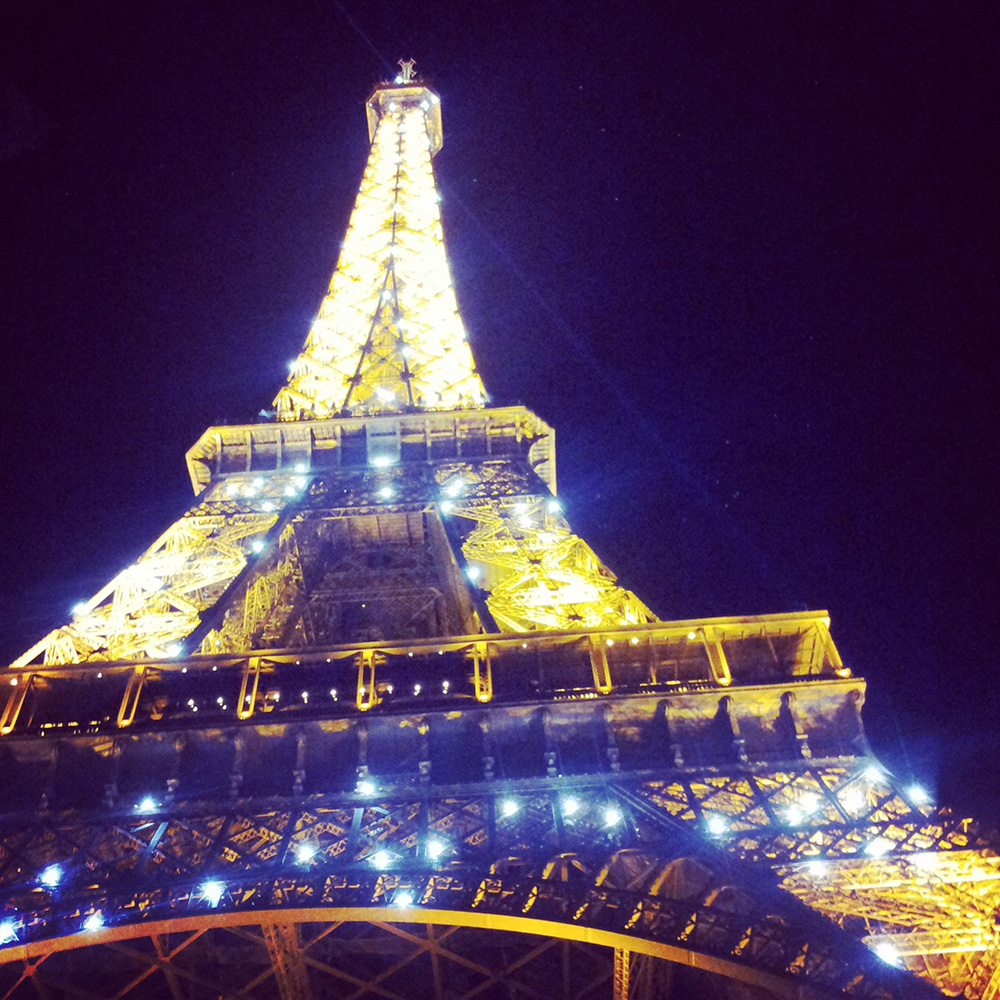

Cities

London
London, England's capital, set on the River Thames, is a 21st-century city with history stretching back to Roman times. At its centre stand the imposing Houses of Parliament, the iconic Big Ben clock tower and Westminster Abbey, site of British monarch coronations. Across the Thames, the London Eye observation wheel provides panoramic views of the South Bank cultural complex, and the entire city.

Paris
Paris, France's capital, is a major European city and a global center for art, fashion, gastronomy and culture. Its picturesque 19th-century cityscape is crisscrossed by wide boulevards and the River Seine. Beyond such landmarks as the Eiffel Tower and the 12th-century, Gothic Notre-Dame cathedral, the city is known for its cafe culture, and designer boutiques along the Rue du Faubourg Saint-Honore.

New York
Home to the Empire State Building, Times Square, Statue of Liberty and other iconic sites, New York City is a fast-paced, globally influential center of art, culture, fashion and finance. The city's 5 boroughs sit where the Hudson River meets the Atlantic Ocean, with the island borough of Manhattan at the Big Apple's core.